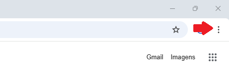
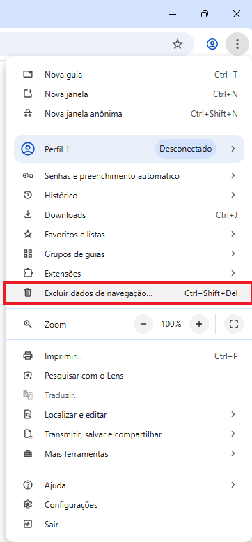
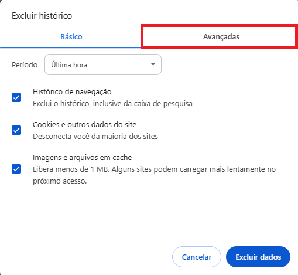
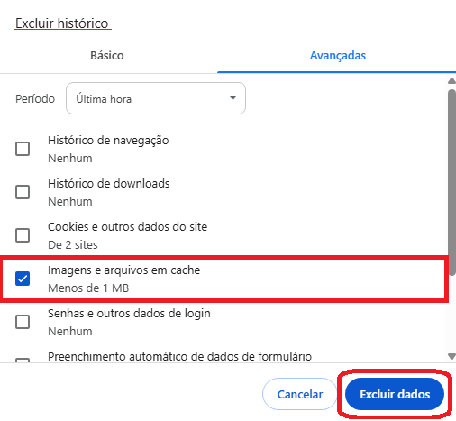
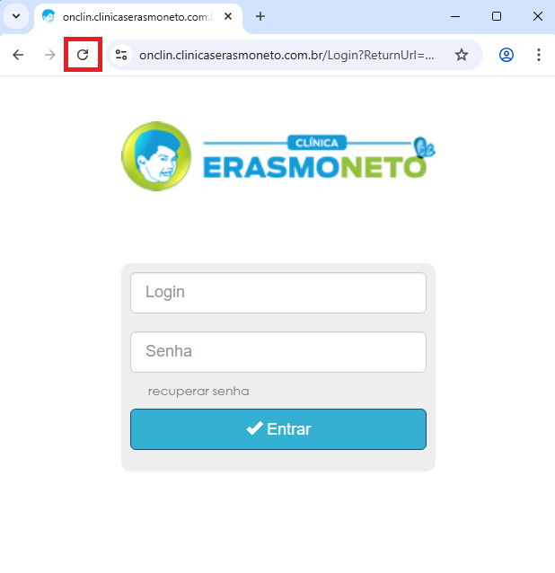

Onclin - Página de Login
1. Abra o menu de Controle e Personalização simbolizado pelos "três pontos" no canto superior direito da sua tela.
2. Logo em seguida, selecione a configuração "Excluir dados de navegação".
3. Selecione o menu "Avançado".

4. Agora marque apenas “Imagens e arquivos em cache” e clique em “Remover dados”.
5. Em seguida, atualize/feche a janela do seu navegador para tentar outra vez.
